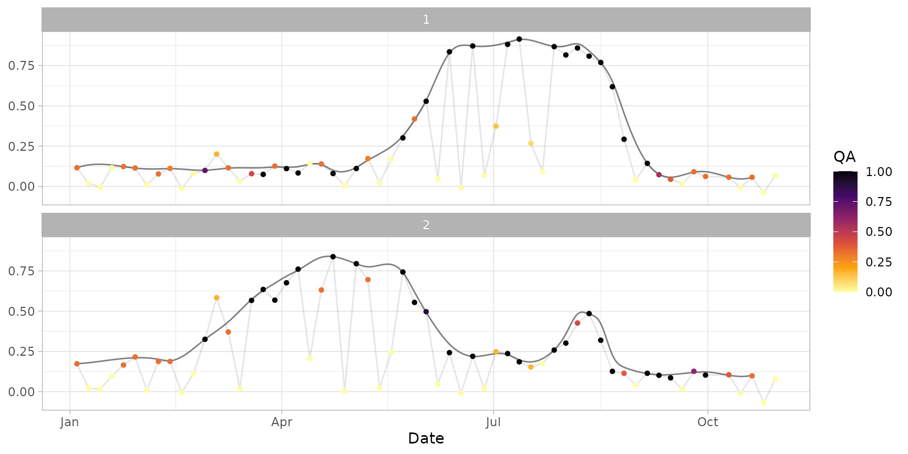

Fill temporal gaps in a time series smoothed with function
smooth_s2ts() to obtain homogeneous values (daily or with a regular
time step).
fill_s2ts(
ts,
frequency = "daily",
method = "fmm",
max_na_days = Inf,
max_extrapolation = 0.1
)Time series in s2ts format (generated using smooth_s2ts()).
(optional) One of the followings:
daily: daily frequency (default);
dop (Days Of Passage): values are returned corresponding to
the theoretic Sentinel-2 dates of passage.
(optional) Argument passed to spline().
(optional) maximum number of consecutive days with missing values which can be filled (in case of longer time windows with missing data, NA are returned). Default is to fit everything (unless this could lead to errors in case of long NT time windows, currently it is the only way to get subsequent functions working).
(optional) Numeric: maximum allowed extrapolation out of original range (relative value). Default is 0.1 (+10%). Set to Inf in order not to set any constraint.
The output time series in tabular format (see extract_ts()).
#' # Load input data
data("ts_smoothed")
# Gap filling using default parameters (daily)
ts_filled <- fill_s2ts(ts_smoothed)
ts_filled # standard print
#> An interpolated s2ts time series with 301 dates and 2 IDs.
#> Date Orbit Sensor 1 2
#> 1: 2020-01-04 022 2B 0.1160602 ○ 0.1740709 ○
#> 2: 2020-01-05 <NA> <NA> 0.1207222 ~ 0.1749062 ~
#> 3: 2020-01-06 <NA> <NA> 0.1247380 ~ 0.1759228 ~
#> 4: 2020-01-07 <NA> <NA> 0.1281397 ~ 0.1771040 ~
#> 5: 2020-01-08 <NA> <NA> 0.1309599 ~ 0.1784328 ~
#> ---
#> 297: 2020-10-26 <NA> <NA> NA ~ NA ~
#> 298: 2020-10-27 <NA> <NA> NA ~ NA ~
#> 299: 2020-10-28 <NA> <NA> NA ~ NA ~
#> 300: 2020-10-29 <NA> <NA> NA ~ NA ~
#> 301: 2020-10-30 022 2B NA ~ NA ~
#>
#> Quality flags: ● [1] ◕ [0.9,1) ◑ [0.75,0.9) ◔ [0.5,0.75) ○ [0,0.5)
#> Interpolated values are marked with "~".
head(as.data.frame(ts_filled)) # see content
#> id date orbit sensor value qa rawval interpolated
#> 1 1 2020-01-04 022 2B 0.1160602 0.33 0.11613333 FALSE
#> 2 1 2020-01-05 <NA> <NA> 0.1207222 NA NA TRUE
#> 3 1 2020-01-06 <NA> <NA> 0.1247380 NA NA TRUE
#> 4 1 2020-01-07 <NA> <NA> 0.1281397 NA NA TRUE
#> 5 1 2020-01-08 <NA> <NA> 0.1309599 NA NA TRUE
#> 6 1 2020-01-09 022 2A 0.1332310 0.00 0.02017083 TRUE
plot(ts_filled)

# Generate a regular time series using the minimum number of required records
ts_filled_2 <- fill_s2ts(ts_smoothed, frequency = "dop")
print(ts_filled_2, topn = 5) # standard print
#> An interpolated s2ts time series with 61 dates and 2 IDs.
#> Date Orbit Sensor 1 2
#> 1: 2020-01-04 022 2B 0.11606015 ○ 0.17407087 ○
#> 2: 2020-01-09 022 2A 0.13323097 ~ 0.17989257 ~
#> 3: 2020-01-14 022 2B 0.13748313 ~ 0.18856602 ~
#> 4: 2020-01-19 022 2A 0.13286728 ~ 0.19798907 ~
#> 5: 2020-01-24 022 2B 0.12343408 ○ 0.20605959 ○
#> ---
#> 57: 2020-10-10 022 2B 0.05760022 ○ 0.10211348 ○
#> 58: 2020-10-15 022 2A 0.04666769 ~ 0.09472827 ~
#> 59: 2020-10-20 022 2B 0.05767390 ○ 0.10161563 ○
#> 60: 2020-10-25 022 2A NA ~ NA ~
#> 61: 2020-10-30 022 2B NA ~ NA ~
#>
#> Quality flags: ● [1] ◕ [0.9,1) ◑ [0.75,0.9) ◔ [0.5,0.75) ○ [0,0.5)
#> Interpolated values are marked with "~".